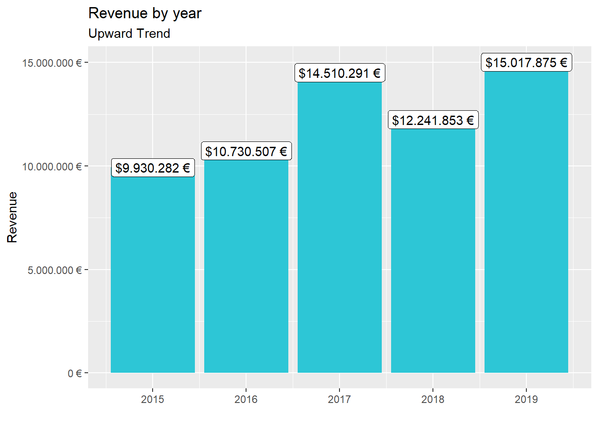

Journal (reproducible report)
Lucas Ernst
2020-12-01
1 Intro to the tidyverse
# Data Science at TUHH ------------------------------------------------------
# SALES ANALYSIS ----
# 1.0 Load libraries ----
library(tidyverse)
library(readxl)
library(lubridate)
library(ggplot2)
# 2.0 Importing Files ----
bikes <- read_excel("D:/Lucas/Uni/Data Science/DS_101/00_data/01_bike_sales/01_raw_data/bikes.xlsx")
bikeshops <- read_excel("D:/Lucas/Uni/Data Science/DS_101/00_data/01_bike_sales/01_raw_data/bikeshops.xlsx")
orderlines <- read_excel("D:/Lucas/Uni/Data Science/DS_101/00_data/01_bike_sales/01_raw_data/orderlines.xlsx")
# 3.0 Examining Data ----
glimpse(bikes)## Rows: 231
## Columns: 9
## $ bike.id <dbl> 2875, 2873, 2874, 2876, 2877, 2225, 2091, 2086, 2088...
## $ model <chr> "Aeroad CF SL Disc 8.0 Di2", "Aeroad CF SLX Disc 9.0...
## $ model.year <dbl> 2020, 2020, 2020, 2020, 2020, 2019, 2019, 2021, 2020...
## $ frame.material <chr> "carbon", "carbon", "carbon", "carbon", "carbon", "c...
## $ weight <dbl> 7.60, 7.27, 7.10, 7.73, 7.83, 6.80, 6.80, 7.60, 7.30...
## $ price <dbl> 4579, 6919, 6429, 5069, 3609, 6139, 5359, 2629, 3699...
## $ category <chr> "Road - Race - Aeroad", "Road - Race - Aeroad", "Roa...
## $ gender <chr> "unisex", "unisex", "unisex", "unisex", "unisex", "u...
## $ url <chr> "https://www.canyon.com/en-de/road-bikes/race-bikes/...bikes %>% select(c(model,bike.id,model.year))## # A tibble: 231 x 3
## model bike.id model.year
## <chr> <dbl> <dbl>
## 1 Aeroad CF SL Disc 8.0 Di2 2875 2020
## 2 Aeroad CF SLX Disc 9.0 ETAP 2873 2020
## 3 Aeroad CF SLX Disc 9.0 Di2 2874 2020
## 4 Aeroad CF SL Disc 8.0 ETAP 2876 2020
## 5 Aeroad CF SL Disc 8.0 2877 2020
## 6 Aeroad CF SLX 9.0 SL 2225 2019
## 7 Aeroad CF SLX 9.0 Di2 2091 2019
## 8 Aeroad CF SL 7.0 2086 2021
## 9 Aeroad CF SL 8.0 Di2 2088 2020
## 10 Aeroad WMN CF SL 8.0 2120 2020
## # ... with 221 more rows# 4.0 Joining Data ----
bike_orderlines_joined <- orderlines %>%
left_join(bikes, by = c("product.id" = "bike.id")) %>%
left_join(bikeshops, by = c("customer.id" = "bikeshop.id"))
glimpse(bike_orderlines_joined)## Rows: 15,644
## Columns: 19
## $ ...1 <chr> "1", "2", "3", "4", "5", "6", "7", "8", "9", "10", "...
## $ order.id <dbl> 1, 1, 2, 2, 3, 3, 3, 3, 3, 4, 5, 5, 5, 5, 6, 6, 6, 6...
## $ order.line <dbl> 1, 2, 1, 2, 1, 2, 3, 4, 5, 1, 1, 2, 3, 4, 1, 2, 3, 4...
## $ order.date <dttm> 2015-01-07, 2015-01-07, 2015-01-10, 2015-01-10, 201...
## $ customer.id <dbl> 2, 2, 10, 10, 6, 6, 6, 6, 6, 22, 8, 8, 8, 8, 16, 16,...
## $ product.id <dbl> 2681, 2411, 2629, 2137, 2367, 1973, 2422, 2655, 2247...
## $ quantity <dbl> 1, 1, 1, 1, 1, 1, 1, 1, 1, 1, 1, 2, 1, 1, 1, 1, 1, 1...
## $ model <chr> "Spectral CF 7 WMN", "Ultimate CF SLX Disc 8.0 ETAP"...
## $ model.year <dbl> 2021, 2020, 2021, 2019, 2020, 2020, 2020, 2021, 2020...
## $ frame.material <chr> "carbon", "carbon", "carbon", "carbon", "aluminium",...
## $ weight <dbl> 13.80, 7.44, 14.06, 8.80, 11.50, 8.80, 8.20, 8.85, 1...
## $ price <dbl> 3119, 5359, 2729, 1749, 1219, 1359, 2529, 1559, 3899...
## $ category <chr> "Mountain - Trail - Spectral", "Road - Race - Ultima...
## $ gender <chr> "female", "unisex", "unisex", "unisex", "unisex", "u...
## $ url <chr> "https://www.canyon.com/en-de/mountain-bikes/trail-b...
## $ name <chr> "AlexandeRad", "AlexandeRad", "WITT-RAD", "WITT-RAD"...
## $ location <chr> "Hamburg, Hamburg", "Hamburg, Hamburg", "Bremen, Bre...
## $ lat <dbl> 53.57532, 53.57532, 53.07379, 53.07379, 48.78234, 48...
## $ lng <dbl> 10.015340, 10.015340, 8.826754, 8.826754, 9.180819, ...# 5.0 Wrangling Data ----
bike_orderlines_wrangled <- bike_orderlines_joined %>%
separate(category,into = c("category.1","category.2","category.3"
,sep = " - ")) %>%
mutate(total.price=price * quantity) %>%
set_names(names(.) %>% str_replace_all("\\.", "_"))
bike_orderlines_groupedbycategory <- bike_orderlines_wrangled %>%
group_by(category_1) %>%
summarize(total_price = sum(price*quantity))
# 6.0 Business Insights ----
# 6.1 Sales by Year ----
# Step 1 - Manipulate
bike_orderlines_salesbyyear <- bike_orderlines_wrangled %>%
transmute(date=year(order_date),total_price) %>%
group_by(date) %>%
summarise(total_sales = sum(total_price)) %>%
mutate(sales_text = scales::dollar(total_sales,big.mark = ".",
decimal.mark = ",", suffix = " €"))
# Step 2 - Visualize
bike_orderlines_salesbyyear %>%
ggplot(aes(x=date,y=total_sales)) +
geom_bar(stat = "identity") +
geom_col(fill="#2DC6D6") +
geom_label(aes(label = sales_text)) +
scale_y_continuous(labels = scales::dollar_format(big.mark = ".",
decimal.mark = ",",
prefix = "",
suffix = " €")) +
labs(
title = "Revenue by year",
subtitle = "Upward Trend",
x = "",
y = "Revenue"
)
# 6.2 Sales by Year and Category 2 ----
# Step 1 - Manipulate
bike_orderlines_salesbyyearcategory <- bike_orderlines_wrangled %>%
transmute(date=year(order_date),total_price, category_1) %>%
group_by(date,category_1) %>%
summarise(total_sales = sum(total_price)) %>%
mutate(sales_text = scales::dollar(total_sales,big.mark = ".",
decimal.mark = ",", suffix = " €"))
# Step 2 - Visualize
bike_orderlines_salesbyyearcategory %>%
ggplot(aes(x=date,y=total_sales, fill = category_1)) +
geom_bar(stat = "identity") +
scale_y_continuous(labels = scales::dollar_format(big.mark = ".",
decimal.mark = ",",
prefix = "",
suffix = " €")) +
labs(
title = "Revenue by year and category",
subtitle = "Each product category has an upward trend",
x = "",
y = "Revenue",
fill = "Main Category"
) +
facet_wrap(vars(category_1))
# 7.0 Writing Files ----
# 7.1 Excel ----
library(writexl)
bike_orderlines_wrangled %>%
write_xlsx("D:/Lucas/Uni/Data Science/DS_101/00_data/01_bike_sales/02_wrangled_data/bike_orderlines.xlsx")
# 7.2 CSV ----
bike_orderlines_wrangled %>%
write_csv("D:/Lucas/Uni/Data Science/DS_101/00_data/01_bike_sales/02_wrangled_data/bike_orderlines.csv")
# 7.3 RDS ----
bike_orderlines_wrangled %>%
write_rds("D:/Lucas/Uni/Data Science/DS_101/00_data/01_bike_sales/02_wrangled_data/bike_orderlines.rds")1.1 Challenge
# 8.0 Challenge ----
# Step 1 - Manipulate
bike_orderlines_wrangled_location <- bike_orderlines_wrangled %>%
transmute(location, total_price, year = year(order_date)) %>%
separate(col = location, into = c("city","state"),sep=", ") %>%
group_by(state, year) %>%
summarise(sales = sum(total_price)) %>%
mutate(sales_text = scales::dollar(sales,big.mark = ".",
decimal.mark = ",", suffix = " €"))
# Step 2 - Visualize
bike_orderlines_wrangled_location %>%
ggplot(aes(x=year,y=sales, fill = state)) +
geom_bar(stat = "identity") +
scale_y_continuous(labels = scales::dollar_format(big.mark = ".",
decimal.mark = ",",
prefix = "",
suffix = " €")) +
labs(
title = "Revenue by year and category",
subtitle = "",
x = "Year",
y = "Revenue",
fill = "Main Category"
) +
theme(axis.text.x = element_text(angle = 45, hjust = 1))+
facet_wrap(vars(state))2 Data Acquisition
# WEBSCRAPING ----
# 1.0 LIBRARIES ----
library(tidyverse) # Main Package - Loads dplyr, purrr, etc.
library(rvest) # HTML Hacking & Web Scraping
library(xopen) # Quickly opening URLs
library(jsonlite) # converts JSON files to R objects
library(glue) # concatenate strings
library(stringi) # character string/text processing
library(dplyr)
library(tidyr)
# Challenge 1 ----
library(RedditExtractoR)
example_urls = reddit_urls(search_terms = "sport") %>%
slice(1:10)
example_urls## date num_comments
## 1 02-12-20 1964
## 2 02-12-20 2235
## 3 30-11-20 630
## 4 23-11-20 714
## 5 22-11-20 1105
## 6 29-11-20 906
## 7 02-12-20 561
## 8 30-11-20 696
## 9 27-11-20 633
## 10 01-12-20 610
## title
## 1 [Charania] Los Angeles Lakers star LeBron James has agreed to a two-year, $85 million maximum contract extension with the franchise, CEO of Klutch Sports, Rich Paul, told @TheAthleticNBA @Stadium.
## 2 Kirk Herbstreit worried for college football: "What the hell is happening to our sport?"
## 3 TIL 42-year-old Zamboni driver, kidney transplant recipient, and practice hockey goalie David Ayres, led the Carolina Hurricanes to a 6-3 win after their two pro goalies were injured. Cheered by the opposing team's fans, he was the oldest player ever to make his pro debut in a major sport.
## 4 It's a sport. It can't be bad for you...
## 5 [Wojnarowski] Utah Jazz All-Star guard Donovan Mitchell has agreed to a five-year, $195M designated rookie max extension, his agents Ty Sullivan and Austin Brown of @caa_sports tell ESPN. Story soon.
## 6 Brett Favre: Sports Fans Don't Want Political Messaging At Games
## 7 [Wojnarowski] Clippers are waiving center Joakim Noah -- and his agent, Bill Duffy of @BDA_Sports, tells ESPN that Noah is \034likely headed toward retirement.\035 One of his era\031s most ferocious competitors, Noah played 13 seasons, made two All-Star games and was a 3-time All-Defensive team choice.
## 8 [CBS Sports] Tom Brady has now lost 3 straight home games for the first time in his career
## 9 [My Sports Update] On this day in 2007, Sean Taylor was shot and killed from a gunshot wound protecting his family from armed robbers. He was only 24 years old. One of the most electric players in the NFL. RIP 21.
## 10 EA SPORTS hit with another FIFA 21 scripting lawsuit for "dictating outcomes" in Ultimate Team to sell packs
## subreddit
## 1 nba
## 2 CFB
## 3 todayilearned
## 4 awfuleverything
## 5 nba
## 6 Conservative
## 7 nba
## 8 nfl
## 9 nfl
## 10 FIFA
## URL
## 1 http://www.reddit.com/r/nba/comments/k5e528/charania_los_angeles_lakers_star_lebron_james_has/
## 2 http://www.reddit.com/r/CFB/comments/k5d980/kirk_herbstreit_worried_for_college_football_what/
## 3 http://www.reddit.com/r/todayilearned/comments/k3yd4m/til_42yearold_zamboni_driver_kidney_transplant/
## 4 http://www.reddit.com/r/awfuleverything/comments/jzsrrg/its_a_sport_it_cant_be_bad_for_you/
## 5 http://www.reddit.com/r/nba/comments/jyz6fz/wojnarowski_utah_jazz_allstar_guard_donovan/
## 6 http://www.reddit.com/r/Conservative/comments/k3fhy2/brett_favre_sports_fans_dont_want_political/
## 7 http://www.reddit.com/r/nba/comments/k505y5/wojnarowski_clippers_are_waiving_center_joakim/
## 8 http://www.reddit.com/r/nfl/comments/k3yoh0/cbs_sports_tom_brady_has_now_lost_3_straight_home/
## 9 http://www.reddit.com/r/nfl/comments/k220r2/my_sports_update_on_this_day_in_2007_sean_taylor/
## 10 http://www.reddit.com/r/FIFA/comments/k4q0ez/ea_sports_hit_with_another_fifa_21_scripting/# Challenge 2 ----
# 1.1 COLLECT PRODUCT FAMILIES ----
url_home <- "https://www.rosebikes.com/bikes/mtb"
# Read in the HTML for the entire webpage
html_home <- read_html(url_home)
# Extract the urls from the href attribute
bike_category_tbl <- html_home %>%
# Going further down the tree and select nodes by class
# Selecting two classes makes it specific enough
html_nodes(css = ".catalog-navigation__link") %>%
html_attr('href') %>%
# Convert vector to tibble
enframe(name = "position", value = "subdirectory") %>%
# Add the domain, because we will get only the subdirectories
mutate(
url = glue("https://www.rosebikes.com{subdirectory}")
) %>%
# Some categories are listed multiple times.
# We only need unique values
distinct(url)
glimpse(bike_category_tbl)## Rows: 5
## Columns: 1
## $ url <glue> "https://www.rosebikes.com/bikes/mtb", "https://www.rosebikes....# 2.1 Get URL for each bike of the Product categories ----
get_bike_data <- function(url){
html_bike_category <- read_html(url)
bike_price_tbl <- html_bike_category %>%
html_nodes(css = ".catalog-category-bikes__price-title") %>%
html_text() %>%
str_remove(pattern = "\\?.*") %>%
enframe(name = "position", value = "price")
bike_title_price_tbl <- html_bike_category %>%
html_nodes(css = ".catalog-category-bikes__title") %>%
html_text() %>%
str_remove(pattern = "\\?.*") %>%
enframe(name = "position", value = "title") %>%
left_join(bike_price_tbl,by = c("position" = "position"))
}
#bike_category_url <- bike_category_tbl$url[2]
#bike_data_tbl <- get_bike_data(bike_category_url)
#glimpse(bike_data_tbl)
# Extract the urls as a character vector
bike_category_url_vec <- bike_category_tbl %>%
pull(url)
# Run the function with every url as an argument
bike_data_lst <- map(bike_category_url_vec, get_bike_data)
# Merge the list into a tibble
bike_data_tbl <- bind_rows(bike_data_lst) %>%
distinct(title, .keep_all=TRUE)
bike_data_tbl## # A tibble: 10 x 3
## position title price
## <int> <chr> <chr>
## 1 1 "\n\nGROUND CONTROL\n\n" "\nfrom €1,699.00\n"
## 2 2 "\n\nROOT MILLER\n\n" "\nfrom €1,999.00\n"
## 3 3 "\n\nPIKES PEAK\n\n" "\nfrom €3,099.00\n"
## 4 4 "\n\nTHE BRUCE\n\n" "\n"
## 5 5 "\n\nCOUNT SOLO\n\n" "\n"
## 6 6 "\n\nPSYCHO PATH\n\n" "\nfrom €1,849.00\n"
## 7 7 "\n\nTHRILL HILL\n\n" "\nfrom €2,599.00\n"
## 8 8 "\n\nTHRILL HILL TRAIL\n\n" "\nfrom €2,899.00\n"
## 9 9 "\n\nSOUL FIRE\n\n" "\nfrom €2,149.00\n"
## 10 1 "\n \nTHE BRUCE\n\n" "\n"3 Data Wrangling
# Tidyverse
library(tidyverse)
library(vroom)
# Data Table
library(data.table)
# Counter
library(tictoc)
library(lubridate)
# Load data ----
#Assignee
col_types <- list(
id = col_character(),
type = col_character(),
name_first = col_skip(),
name_last = col_skip(),
organization = col_character()
)
assignee_tbl <- vroom(
file = "D:/Lucas/Uni/Data Science/DS_101/02_data_wrangling/assignee/assignee.tsv",
delim = "\t",
col_types = col_types,
na = c("", "NA", "NULL")
)
#Patent_assignee
col_types <- list(
patent_id = col_character(),
assignee_id = col_character(),
location_id = col_skip()
)
patent_assignee_tbl <- vroom(
file = "D:/Lucas/Uni/Data Science/DS_101/02_data_wrangling/patent_assignee/patent_assignee.tsv",
delim = "\t",
col_types = col_types,
na = c("", "NA", "NULL")
)
#Patent
col_types <- list(
id = col_character(),
type = col_skip(),
number = col_character(),
country = col_skip(),
date = col_date("%Y-%m-%d"),
abstract = col_skip(),
title = col_skip(),
kind = col_skip(),
num_claims = col_skip(),
filename = col_skip(),
withdrawn = col_skip()
)
patent_tbl <- vroom(
file = "D:/Lucas/Uni/Data Science/DS_101/02_data_wrangling/patent/patent.tsv",
delim = "\t",
col_types = col_types,
na = c("", "NA", "NULL")
)
#Uspc
col_types <- list(
uuid = col_skip(),
patent_id = col_character(),
mainclass_id = col_character(),
subclass_id = col_skip(),
sequence = col_skip()
)
uspc_tbl <- vroom(
file = "D:/Lucas/Uni/Data Science/DS_101/02_data_wrangling/uspc/uspc.tsv",
delim = "\t",
col_types = col_types,
na = c("", "NA", "NULL")
)3.1 Challenges
# Challenge 1 ----
first_tbl <- assignee_tbl %>% filter(type == 2) %>%
select(-type) %>%
left_join(patent_assignee_tbl, by = c("id"="assignee_id")) %>%
group_by(organization) %>%
count(organization,name = "count", sort=TRUE) %>%
slice(1:10)
first_tbl## # A tibble: 226,687 x 2
## # Groups: organization [226,687]
## organization count
## <chr> <int>
## 1 "'brellabox Inc." 2
## 2 "!j Incorporated" 2
## 3 "!maginethis Renovations, LLC" 3
## 4 "\"\"\"\"\"\"\"\"\"\"\"\"\"\"\"\"\"\"\"\"\"\"\"\"\"\"\"\"\"\"\"A\"\"\"~ 5
## 5 "\"\"\"\"\"\"\"\"\"\"\"\"\"\"\"\"\"\"\"\"\"\"\"\"\"\"\"\"\"\"\"A\"\"\"~ 2
## 6 "\"\"\"\"\"\"\"\"\"\"\"\"\"\"\"\"\"\"\"\"\"\"\"\"\"\"\"\"\"\"\"A\"\"\"~ 2
## 7 "\"\"\"\"\"\"\"\"\"\"\"\"\"\"\"\"\"\"\"\"\"\"\"\"\"\"\"\"\"\"\"Z\"\"\"~ 2
## 8 "\"\"\"\"\"\"\"\"\"\"\"\"\"\"\"Advanced Energy Concept \"\"\"\"\"\"\"\~ 2
## 9 "\"\"\"\"\"\"\"\"\"\"\"\"\"\"\"Brand \"\"\"\"\"\"\"\"\"\"\"\"\"\"\"\"X~ 2
## 10 "\"\"\"\"\"\"\"\"\"\"\"\"\"\"\"Chas. \"\"\"\"\"\"\"\"\"\"\"\"\"\"\"\"R~ 3
## # ... with 226,677 more rows# Challenge 2 ----
assignee_patent_assignee_wrangled <- assignee_tbl %>%
left_join(patent_assignee_tbl, by = c("id"="assignee_id")) %>%
select(-id)
second_tbl <- patent_tbl %>% filter (year(date) == 2019) %>%
select (-date) %>%
left_join(assignee_patent_assignee_wrangled, by = c("id" = "patent_id")) %>%
filter(type == 2) %>%
group_by(organization) %>%
count(organization,name = "count", sort=TRUE) %>%
slice(1:10)
second_tbl## # A tibble: 26,639 x 2
## # Groups: organization [26,639]
## organization count
## <chr> <int>
## 1 #1 A LifeSafer, Inc. 1
## 2 (WE) FOR DOGS, LLC 1
## 3 [24]7.ai, Inc. 20
## 4 03312004 LLC 1
## 5 034MOTORSPORT 1
## 6 1-800 Contacts, Inc. 1
## 7 1,4 Group, Inc. 1
## 8 10&8 1
## 9 100% Speedlab, LLC 4
## 10 1087 SYSTEMS, INC. 3
## # ... with 26,629 more rows# Challenge 3 ----
most_innovative_sector <- uspc_tbl %>%
group_by(mainclass_id) %>%
count(mainclass_id, name = "count", sort=TRUE) %>%
slice(1)
most_innovative_sector## # A tibble: 1,237 x 2
## # Groups: mainclass_id [1,237]
## mainclass_id count
## <chr> <int>
## 1 -0T 1
## 2 ;16 1
## 3 ;47 1
## 4 ??? 1
## 5 0 4
## 6 00 3
## 7 002 6
## 8 004 12
## 9 008 8
## 10 01 1
## # ... with 1,227 more rowstop10ww <- assignee_tbl %>%
select(-type) %>%
left_join(patent_assignee_tbl, by = c("id"="assignee_id")) %>%
filter(!is.na(organization)) %>%
group_by(organization) %>%
count(organization,name = "count", sort=TRUE) %>%
ungroup() %>%
slice(1:10)
top10ww## # A tibble: 10 x 2
## organization count
## <chr> <int>
## 1 International Business Machines Corporation 139092
## 2 Samsung Electronics Co., Ltd. 93562
## 3 Canon Kabushiki Kaisha 75910
## 4 Sony Corporation 54343
## 5 Kabushiki Kaisha Toshiba 49443
## 6 General Electric Company 47122
## 7 Hitachi, Ltd. 45375
## 8 Intel Corporation 42157
## 9 Fujitsu Limited 37197
## 10 Hewlett-Packard Development Company, L.P. 35573top5uspto <- assignee_tbl %>% filter( organization %in% top10ww$organization) %>%
left_join(patent_assignee_tbl, by = c("id" = "assignee_id")) %>%
left_join(uspc_tbl, by = c("patent_id"="patent_id")) %>%
filter(!is.na(mainclass_id)) %>%
group_by(mainclass_id) %>%
count(mainclass_id,name = "count", sort=TRUE) %>%
ungroup() %>%
slice(1:5)
top5uspto## # A tibble: 5 x 2
## mainclass_id count
## <chr> <int>
## 1 257 90981
## 2 438 52071
## 3 365 40283
## 4 370 36369
## 5 358 362274 Visualisation
# 1.0 Lollipop Chart: Top N Customers ----
library(tidyverse)
library(lubridate)
bike_orderlines_tbl <- read_rds("00_data/01_bike_sales/02_wrangled_data/bike_orderlines.rds")## Error in gzfile(file, "rb"): cannot open the connectionn <- 10
# Data Manipulation
top_customers_tbl <- bike_orderlines_tbl %>%
rename(bikeshop = name) %>%
# Select relevant columns
select(bikeshop, total_price) %>%
# Collapse the least frequent values into "other"
mutate(bikeshop = as_factor(bikeshop) %>% fct_lump(n = n, w = total_price)) %>%
# Group and summarize
group_by(bikeshop) %>%
summarize(revenue = sum(total_price)) %>%
ungroup() %>%
# Reorder the column customer_city by revenue
mutate(bikeshop = bikeshop %>% fct_reorder(revenue)) %>%
# Place "Other" at the beginning
mutate(bikeshop = bikeshop %>% fct_relevel("Other", after = 0)) %>%
# Sort by this column
arrange(desc(bikeshop)) %>%
# Add Revenue Text
mutate(revenue_text = scales::dollar(revenue,
scale = 1e-6,
prefix = "",
suffix = "M ???")) %>%
# Add Cumulative Percent
mutate(cum_pct = cumsum(revenue) / sum(revenue)) %>%
mutate(cum_pct_text = scales::percent(cum_pct)) %>%
# Add Rank
mutate(rank = row_number()) %>%
mutate(rank = case_when(
rank == max(rank) ~ NA_integer_,
TRUE ~ rank
)) %>%
# Add Label text
mutate(label_text = str_glue("Rank: {rank}\nRev: {revenue_text}\nCumPct: {cum_pct_text}"))## Error in rename(., bikeshop = name): object 'bike_orderlines_tbl' not found# Data Visualization
top_customers_tbl %>%
# Canvas
ggplot(aes(revenue, bikeshop)) +
# Geometries
geom_segment(aes(xend = 0, yend = bikeshop),
color = RColorBrewer::brewer.pal(n = 11, name = "RdBu")[11],
size = 1) +
geom_point(aes(size = revenue),
color = RColorBrewer::brewer.pal(n = 11, name = "RdBu")[11]) +
geom_label(aes(label = label_text),
hjust = "inward",
size = 3,
color = RColorBrewer::brewer.pal(n = 11, name = "RdBu")[11]) +
# Formatting
scale_x_continuous(labels = scales::dollar_format(scale = 1e-6,
prefix = "",
suffix = "M ???")) +
labs(
title = str_glue("Top {n} Customers"),
subtitle = str_glue(
"Start: {year(min(bike_orderlines_tbl$order_date))}
End: {year(max(bike_orderlines_tbl$order_date))}"),
x = "Revenue (M ???)",
y = "Customer",
caption = str_glue("Top 6 customers contribute
52% of purchasing power.")
) +
theme_minimal() +
theme(
legend.position = "none",
plot.title = element_text(face = "bold"),
plot.caption = element_text(face = "bold.italic")
)## Error in ggplot(., aes(revenue, bikeshop)): object 'top_customers_tbl' not found4.1 Challenges
# Challenge 1 ----
library(tidyverse)
library(lubridate)
library(wesanderson)
covid_data_tbl <- read_csv("https://opendata.ecdc.europa.eu/covid19/casedistribution/csv")
covid_data_filtered <- covid_data_tbl %>%
rename(cumulative = "Cumulative_number_for_14_days_of_COVID-19_cases_per_100000") %>%
filter( year == 2020 & (countriesAndTerritories == "United_States_of_America"|
countriesAndTerritories == "Spain" |
countriesAndTerritories == "Germany"|
countriesAndTerritories == "France"|
countriesAndTerritories == "United_Kingdom") )%>%
mutate(date=as.Date(dateRep,format = "%d/%m/%Y")) %>%
arrange(date) %>%
group_by(countriesAndTerritories) %>%
mutate(cum_cases = cumsum(cases))
lastdate <- covid_data_filtered %>% slice(which.max(date)) %>% filter(countriesAndTerritories == "United_States_of_America")
covid_data_filtered %>%
ggplot(aes(x = date, y = cum_cases, color = countriesAndTerritories)) +
geom_line(size= 1, linetype = 1) +
scale_y_continuous(breaks = seq(0, 20e6, by = 2.5e6),labels = scales::dollar_format(scale = 1e-6,
prefix = "",
suffix = "M",
accuracy = 0.1))+
scale_x_date(date_label = "%B", breaks = "month")+
geom_label(data = lastdate, aes(label = scales::dollar(cum_cases,
scale = 1e-6,
prefix = "",
suffix = "M")),
vjust = 1.5, color = "white", fill = "lightblue") +
labs(
title = str_glue("COVID-19 confirmed cases worldwide"),
subtitle = str_glue(""),
x = "Year 2020",
y = "Cumulative Cases",
color = "Countries / Region"
) +
theme_minimal() +
theme(
axis.text.x = element_text(angle =45),
legend.position = "bottom",
axis.title = element_text(face = "bold")) +
guides(col = guide_legend(nrow = 2)) +
scale_color_brewer(palette= "Accent")# Challenge 2 ----
library(maps)
require(maps)
require(viridis)
covid_data_2 <- covid_data_tbl %>%
mutate(across(countriesAndTerritories, str_replace_all, "_", " ")) %>%
mutate(countriesAndTerritories = case_when(
countriesAndTerritories == "United Kingdom" ~ "UK",
countriesAndTerritories == "United States of America" ~ "USA",
countriesAndTerritories == "Czechia" ~ "Czech Republic",
TRUE ~ countriesAndTerritories
)) %>% group_by(countriesAndTerritories)%>%
summarise(mort_rate= sum(deaths)/max(popData2019))%>%
ungroup()
world_map <- map_data("world") %>% left_join(covid_data_2,by = c("region" = "countriesAndTerritories"))
total_deaths_ww <- sum(covid_data_tbl$deaths)*1e-5
ggplot(world_map, aes(x = long, y = lat, group = group)) +
geom_polygon(aes(fill = mort_rate ))+
scale_fill_viridis_c(option = "E", end = 0.35, direction = -1,breaks = seq(0, 2e-3, by=3e-4),labels = scales::dollar_format(scale = 1e2,
prefix = "",
suffix = "%",
accuracy = 0.001)) +
labs(
title = str_glue(" COnfirmed COVID-19 deaths relative to the size of the population"),
subtitle = str_glue("More than {floor(total_deaths_ww)*1e-1} Million confirmed COVID-19 deaths worldwide"),
x = "",
y = "",
fill = "Mortality Rate"
) +
theme_minimal() +
theme(axis.title.x=element_blank(),
axis.text.x=element_blank(),
axis.ticks.x=element_blank(),
axis.text.y = element_blank())